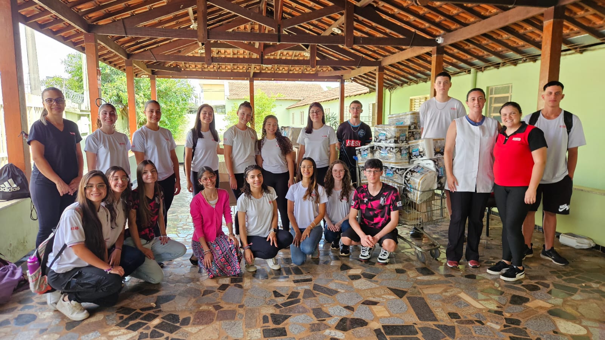
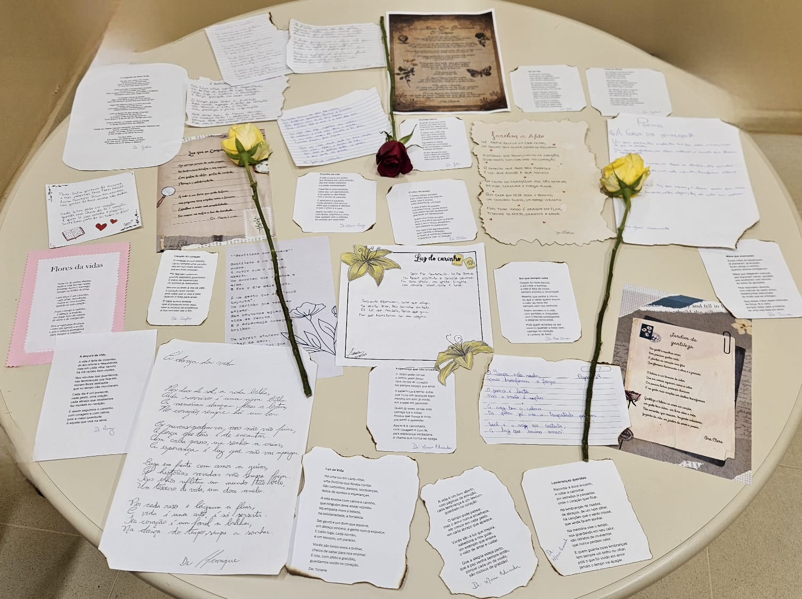

👴No dia 3 de outubro, os alunos do 2º ano realizaram uma intervenção social no Asilo São Vicente em celebração ao Dia da Pessoa Idosa. Houve sarau literário, música, entrega de rosas e doação de alimentos. Inspirado no livro A caligrafia de Dona Sofia, o projeto valorizou memória e sensibilidade. A atividade foi organizada pela professora Rafaela, pela bibliotecária Marcele e pela auxiliar Aline para incentivar empatia e solidariedade.👵

